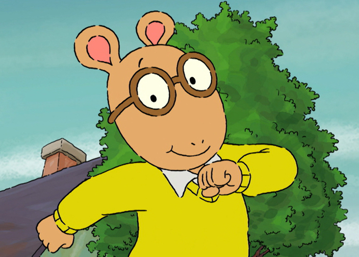
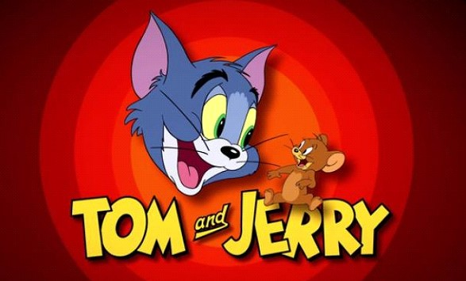
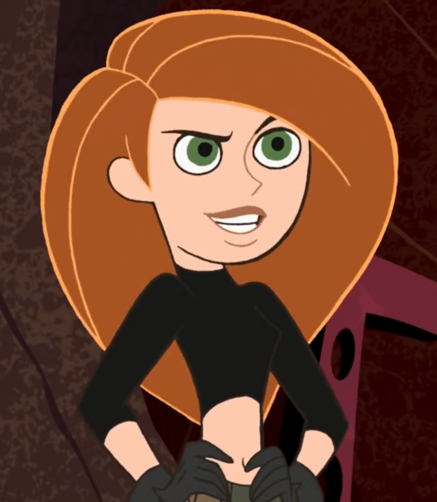
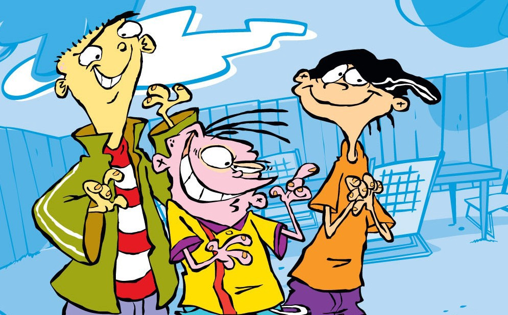

The most important years of our lives. Adolescence, childhood, youth whatever word you want to use to describe the period of time where you are free from the real responsibility of the world, at least until you're 16 (if you're lucky).
There are many things I love/miss/envy about being a kid. Things like discovering new wonders that seem simple to adults, not being stressed about EVERY SINGLE THING, and the most significant aspect(to me at least)…the cartoons. This is a list of 5 cartoon tv series that I happily consumed during my childhood. Shows that have brought joy to my life as I grew from a little girl to a somewhat decent young adult. This top 5 list contains entertaining shows from various channels, with shows that have sadly ended as well as others that continue to go on strong.
That's enough of introductions, let's dive right on in starting with...
5. Arthur

This 8-year-old has more of a social life than I had at 18. Arthur, his best friend Buster and their group of friends navigate through life while facing the problems that come along with being a third grader.
This show is a classic
Debuting October 7, 1996. This show is still captivating audiences of newer generations. I have fond memories of coming home after school, grabbing a snack and sitting down to watch this show on PBS, before doing what little homework I had. Though this show has undergone a major animation style change that is a little off putting to the original; it may have the appeal to younger audiences that enjoy its look.
4. Tom and Jerry

This cat and mouse chase has been ongoing since the 1940s Even through all the style variations this series still holds up. This show has an interesting take on the cat and mouse relationship. Depending on the episode, the two sometimes switch roles, which offers entertaining content everytime. I even had vhs tapes (back when they were popular) of these two. This is a show that generations young and old alike can watch together.
3. Kim Possible

She's your basic average girl. And she's here to save the world, you can't stop her cause she's Kim Possible. Kim Possible was everything I wanted to be when I was younger The embodiment of a strong independent woman (or in this case a teen girl) Thinking now, she might have been so appealing to me because of the fact that she is a literal SUPERHERO! I enjoyed this show during my middle school days. Disney Channel around this time was at its pinnacle, which makes sense as to why this show was the best. Though there were many other great shows on in the early 2000s on Disney, Kimmy P definitely earned a spot on this list.
2. Ed Edd n Eddy

The three "lovable" Ed's of Peach Creek Cul-de-sac. This show was very charming to me for some reason. I don't know if its the squiggly line effect on the characters or the terrible schemes that always fall through, but the edboy's always had me coming back for more. I would religiously watch this show anytime I saw that it was on Cartoon Network. I don't think there was any series on that station that I liked more than this. If I had to choose my favorite character between the trio, it would have to be Edd or Double D as the others would call him. He was the brains of their group, the one building all the needed things for their schemes. This show was/is just perfect!
Now, the one you all have been waiting for...
Number one...
Spongebob Squarepants
Who lives in a pineapple under the sea SPONGEBOB SQUAREPANTS! This show has been apart of my entire life (as of now). Spongebob is (one of) the longest running children's cartoons that I have watched. Though haters love to clown on the spongey frycook, his giddy laugh is enough to make anyone a fan. There's not much to say about my favorite sea sponge. The ratings speak enough for its success and popularity as this show has been on for 20 years. This show will always have a special place in my heart, as it is in my opinion the BEST SHOW EVER!
And that's the end of my favorite childhood cartoons. Though I am no longer a child, I will continue watching cartoons as they will remain to be the best.